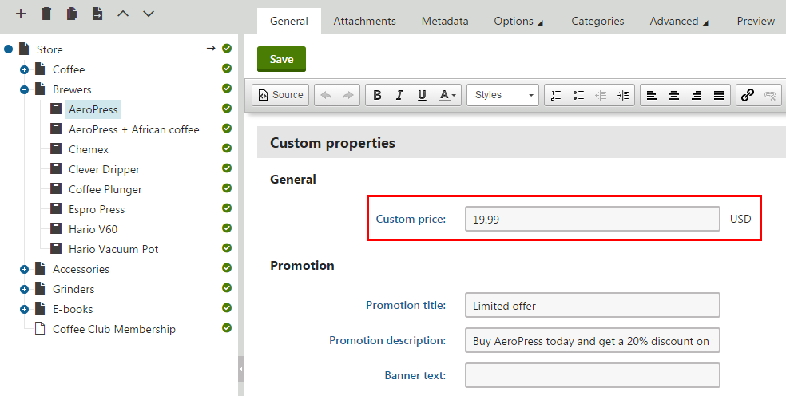

Customizing product prices
The Kentico E-commerce Solution allows you to customize how the system retrieves product prices. For example, you can:
Adjust the system to load price values from a custom database column
Integrate an external system that fully provides prices for products and their various configurations
To customize the retrieval of prices:
Open your Kentico project in Visual Studio.
Create new classes that implement one or more of the pricing customization interfaces (described below).
Class location
For production sites, we recommend creating a new assembly (Class library project) in your Kentico solution and including the classes there. Then, add the appropriate references to both the assembly and the main Kentico web project. For more information, see Best practices for customization.
Implement all methods required by the given interfaces.
Register your implementations of the interfaces using the RegisterImplementation assembly attribute (or use a Factory class to serve instances dynamically in certain cases).
When you reload the website, the system uses the custom implementations that you registered instead of the default pricing functionality.
Pricing customization interfaces
All mentioned interfaces can be found in the CMS.Ecommerce namespace.
Product price source
The price source implementation determines how the system gets product prices on the most basic level. The default Kentico price source loads product prices from the SKUPrice (standard price) or SKURetailPrice (list price) columns of the COM_SKU database table.
This type of customization allows you to change the source of the product price (for example a database column) while keeping all other parts of the default Kentico price processing.
ISKUPriceSource – implementations must contain the GetPrice method, which returns a price value (decimal) for a specified product and currency.
ISKUPriceSourceFactory – serves a separate instance of a class implementing ISKUPriceSource for each site. Must be implemented to use custom ISKUPriceSource implementations. Requires the following methods:
GetSKUPriceSource – returns an ISKUPriceSource instance for loading standard product prices.
GetSKUListPriceSource – returns an ISKUPriceSource instance for loading product list prices.
When writing the GetSKUPriceSource and GetSKUListPriceSource methods, you can either return instances of different ISKUPriceSource implementations or use a single implementation with constructor parameters for switching between the standard price and list price.
See: Example - Loading product prices from custom columns
Product pricing service
The system uses a pricing service to calculate the prices of products within a specific context, including adjustments from product options (of the Attribute and Text type) and product unit discounts (catalog discounts and volume discounts). The default Kentico pricing service uses the ISKUPriceSource and ISKUPriceSourceFactory implementations to get the basic price, adds adjustments for any assigned product options, and then applies all valid product discounts.
Creating a custom implementation of the IProductPricingService interface allows you to fully replace the default Kentico price processing, for example using an external pricing service.
Implementations of IProductPricingService must contain the GetPrices method. The method provides the following parameters:
The product (SKUInfo) – can be a standard product, product variant, or product option of the Products type.
Applied product options of the Attribute or Text type (IEnumerable<SKUInfo>).
A PriceParameters object holding additional data related to the price context, with the following properties:
Currency – the currency (CurrencyInfo) in which the price is requested.
Quantity – the number of product units within the pricing context (can be used to calculate custom volume discounts).
SiteID – an identifier of the site on which the price is calculated.
User – the user object (UserInfo) for which the prices are calculated. Is null for anonymous customers who are not registered as website users.
Customer – the customer object (CustomerInfo) for which the prices are calculated. Is null when calculating prices for anonymous visitors before they enter customer details in the checkout process.
CalculationDate – a DateTime value storing the time for which the price is calculated (can be used to check the validity of product discounts). For most price calculations, the value is equal to the current time. When calculating prices for existing orders, the value is equal to the date and time when the order was created.
The GetPrices method must return a ProductPrices object, which holds the following properties:
StandardPrice – the calculated price before any discounts are applied.
Price – the calculated final price including discounts.
AppliedDiscounts – a summary of any applied discounts (represented by a ValuesSummary object containing discount name and value pairs).
See: Example - Using an external pricing service
Catalog price calculation
The system uses an additional API layer to calculate the prices displayed in product catalogs on the live website. The default Kentico catalog price calculation uses the IProductPricingService implementation to get product prices, adds adjustments for any selected product accessories (product options of the Products type), and then uses the ICatalogTaxCalculator implementation to get information about tax values (see Customizing tax calculation).
Customize the catalog price calculation if you need to adjust how prices are displayed in the live site catalog, without affecting the price calculations during the checkout process.
ICatalogPriceCalculator
ICatalogPriceCalculatorFactory – serves a separate instance of a class implementing ICatalogPriceCalculator for each site. Must be implemented to use custom ICatalogPriceCalculator implementations.
Implementations of ICatalogPriceCalculator must contain two methods:
GetPrices – calculates the prices displayed on the live site in product catalogs.
GetAdjustment – calculates the price adjustment value for selectors of product options. Returns a decimal price adjustment value, and provides parameters representing the given product option (SKUInfo), parent product or product variant (SKUInfo), and the current shopping cart (ShoppingCartInfo).
The GetPrices method provides the following parameters:
The product or product variant (SKUInfo).
Applied product options (IEnumerable<SKUInfo>) of all types.
The current shopping cart (ShoppingCartInfo) of the user browsing the catalog, which provides any required context data, such as the user object or selected currency.
The GetPrices method must return a ProductCatalogPrices object, which holds the following properties:
StandardPrice – the calculated price before any discounts are applied.
Price – the calculated price including discounts.
Tax – the tax value calculated for the Price (depending on the site's Prices include tax setting, the value either represents the tax that will be added to the price in the checkout process, or the tax component extracted from the price).
Discounts – a summary of any applied discounts (represented by a ValuesSummary object containing discount name and value pairs).
Example – Loading product prices from custom columns
The following example demonstrates how to customize the system to load product prices from a different database column than the default SKUPrice. The example loads prices from a custom SKUCustomPrice column for products that have their internal status set to Special offer.
Start by adding a custom column (field) for product objects:
Open the Modules application.
Edit the E-commerce module.
Switch to the Classes tab.
Edit the SKU class.
Switch to the Fields tab.
Create a new field based on your needs.
The example uses SKUCustomPrice as the Field name.
We strongly recommend using Decimal number as the Data type of fields storing price values.
You can use the default Price selector as the field's Form control if you wish to show the field in editing forms in the product administration interface.
Click Save.
The custom price column is ready for use. By default, store administrators can edit the value in the Products application when viewing products on the General tab, under the Custom properties section.

Editing the value of a custom price column in the Products application
Prepare a separate project for custom classes in your Kentico solution:
Open your Kentico solution in Visual Studio.
Create a new Class Library project in the Kentico solution (or reuse an existing custom project).
Add references to the required Kentico libraries (DLLs) for the new project:
Right-click the project and select Add -> Reference.
Select the Browse tab of the Reference manager dialog, click Browse and navigate to the Lib folder of your Kentico web project.
Add references to the following libraries (and any others that you may need in your custom code):
CMS.Base.dll
CMS.Core.dll
CMS.DataEngine.dll
CMS.Ecommerce.dll
CMS.Globalization.dll
CMS.Helpers.dll
CMS.Membership.dll
Reference the custom project from the Kentico web project (CMSApp or CMS).
Edit the custom project's AssemblyInfo.cs file (in the Properties folder).
Add the AssemblyDiscoverable assembly attribute:
usingCMS;[assembly:AssemblyDiscoverable]
Continue by creating custom implementations of the ISKUPriceSource and ISKUPriceSourceFactory interfaces:
Add a new class under the custom project, implementing the ISKUPriceSource interface.
usingCMS.Ecommerce;usingCMS.Helpers;publicclassCustomSKUPriceSource : ISKUPriceSource{privatereadonlyISiteMainCurrencySource mainCurrencySource;privatereadonlyICurrencyConverter currencyConverter;privatereadonlyboolgetListPrice;/// <summary>/// The first two constructor parameters accept instances of currency-related classes from CustomSKUPriceSourceFactory./// The third parameter determines whether the price source loads the list price instead of the standard price./// </summary>publicCustomSKUPriceSource(ISiteMainCurrencySource mainCurrencySource, ICurrencyConverter currencyConverter,boolgetListPrice){this.mainCurrencySource = mainCurrencySource;this.currencyConverter = currencyConverter;this.getListPrice = getListPrice;}/// <summary>/// Loads the basic price value for a specified product and currency./// The returned price is then further processed by the system./// </summary>publicdecimalGetPrice(SKUInfo sku, CurrencyInfo currency){// Gets the basic price according to custom logicdecimalprice = GetCustomPrice(sku, currency);// Uses the default Kentico currency API to convert the price// from the site's main currency into the requested currency (if necessary)stringsiteMainCurrencyCode = mainCurrencySource.GetSiteMainCurrencyCode(sku.SKUSiteID);returncurrencyConverter.Convert(price, siteMainCurrencyCode, currency.CurrencyCode);}/// <summary>/// Gets the basic product price. You can replace this method with any type of custom logic./// </summary>privatedecimalGetCustomPrice(SKUInfo sku, CurrencyInfo currency){// If the list price is requested, loads the value from the product's default 'SKURetailPrice' columnif(getListPrice){returnsku.SKURetailPrice;}// Gets the product's internal statusInternalStatusInfo status = InternalStatusInfoProvider.GetInternalStatusInfo(sku.SKUInternalStatusID);// Checks whether the product has the 'specialoffer' internal statusif((status !=null) && (status.InternalStatusName.ToLowerInvariant() =="specialoffer")){// Gets the product's price from a custom database column - SKUCustomPricereturnValidationHelper.GetDecimal(sku.GetValue("SKUCustomPrice"), 0);}// If none of the custom conditions are fulfilled, gets the price from the default 'SKUPrice' columnreturnsku.SKUPrice;}}Add a new class under the custom project, implementing the ISKUPriceSourceFactory interface.
usingCMS;usingCMS.Ecommerce;// Registers the custom implementation of ISKUPriceSourceFactory[assembly: RegisterImplementation(typeof(ISKUPriceSourceFactory),typeof(CustomSKUPriceSourceFactory))]publicclassCustomSKUPriceSourceFactory : ISKUPriceSourceFactory{privatereadonlyISiteMainCurrencySource mainCurrencySource;privatereadonlyICurrencyConverterFactory currencyConverterFactory;/// <summary>/// Constructor./// The system automatically supplies instances of the ISiteMainCurrencySource and ICurrencyConverterFactory implementations./// </summary>publicCustomSKUPriceSourceFactory(ISiteMainCurrencySource mainCurrencySource, ICurrencyConverterFactory currencyConverterFactory){this.mainCurrencySource = mainCurrencySource;this.currencyConverterFactory = currencyConverterFactory;}/// <summary>/// Provides a ISKUPriceSource instance for loading standard product prices./// </summary>publicISKUPriceSource GetSKUPriceSource(intsiteId){// Returns an instance of the custom price source implementation// The first two parameters provide instances of currency-related classes required by CustomSKUPriceSource// The third parameter configures CustomSKUPriceSource to load standard pricesreturnnewCustomSKUPriceSource(mainCurrencySource, currencyConverterFactory.GetCurrencyConverter(siteId), getListPrice:false);}/// <summary>/// Provides a ISKUPriceSource instance for loading product list prices./// </summary>publicISKUPriceSource GetSKUListPriceSource(intsiteId){// Returns an instance of the custom price source implementation// The first two parameters provide instances of currency-related classes required by CustomSKUPriceSource// The third parameter configures CustomSKUPriceSource to load list pricesreturnnewCustomSKUPriceSource(mainCurrencySource, currencyConverterFactory.GetCurrencyConverter(siteId), getListPrice:true);}}Save all changes and Build the custom project.
The registered CustomSKUPriceSourceFactory class provides an instance of CustomSKUPriceSource, with a parameter that indicates whether the standard price or list price is requested. The CustomSKUPriceSource implementation ensures that products with the Special offer internal status load their basic price from the SKUCustomPrice column instead of the default SKUPrice. The basic price is then further processed by the system, and affects both price calculations during the checkout process and prices displayed in product catalogs on the live site (when using appropriate transformation methods or the default built-in web parts).
The sample code also demonstrates how to use the default implementations of currency-related interfaces to convert the returned price value for stores using multiple currencies.
Example – Using an external pricing service
The following example demonstrates how to use a custom IProductPricingService implementation to integrate a 3rd-party service that fully provides prices for products. In this example, the returned price values are static, but you can replace the code with calls to the API of an external pricing service. Product data can be supplied to the pricing service from the parameters of the GetPrices method, which is required in all implementations of the IProductPricingService interface.
Recreate or reuse the custom project from the previous example.
Create a new class under the custom project, implementing the IProductPricingService interface.
Save all changes and Build the custom project.
using System.Collections.Generic;using CMS;using CMS.Ecommerce;// Registers the custom implementation of IProductPricingService[assembly: RegisterImplementation(typeof(IProductPricingService), typeof(CustomProductPricingService))]public class CustomProductPricingService : IProductPricingService{ /// <summary> /// Calculates the price for a specified product and product option configuration. /// Additional data related to the price context is provided in the PriceParameters. /// Returns a 'ProductPrices' object containing the calculated price and information about any applied discounts. /// </summary> public ProductPrices GetPrices(SKUInfo sku, IEnumerable<SKUInfo> options, PriceParameters priceParams) { // Gets a custom price for the basic product decimal standardPrice = GetCustomPrice(sku, priceParams); // Gets a custom price total for any product options decimal optionsPrice = 0; if (options != null) { foreach (SKUInfo option in options) { optionsPrice += GetCustomPrice(option, priceParams); } } decimal priceWithOptions = standardPrice + optionsPrice; // Gets a ValuesSummary object containing information about any discounts used by the custom pricing logic ValuesSummary appliedDiscounts = GetCustomDiscounts(sku, priceWithOptions, priceParams); // Sums up the total discount value decimal discountValue = 0; foreach (SummaryItem discount in appliedDiscounts) { discountValue += discount.Value; } // Returns the calculated product prices. The constructor parameters are: // price - the final price of the product // standardPrice - the price before any discounts // discounts - a ValuesSummary object containing information about applied discounts return new ProductPrices(priceWithOptions - discountValue, priceWithOptions, appliedDiscounts); } /// <summary> /// Gets a custom price for the specified product. /// The example only provides a static number, but you can use any type of custom logic, /// e.g. call the API of a 3rd-party pricing service. /// </summary> private decimal GetCustomPrice(SKUInfo sku, PriceParameters priceParams) { // Returns a price for product options (the currency is specified in the PriceParameters) if (sku.IsProductOption) { return 5m; } // Returns a base price for products (the currency is specified in the PriceParameters) return 50m; } /// <summary> /// Collects information about discounts applied by the custom pricing logic. /// The example only returns a basic set of discounts, but you can use any type of custom logic, /// e.g. based on data returned by a 3rd-party pricing service. /// </summary> private ValuesSummary GetCustomDiscounts(SKUInfo sku, decimal price, PriceParameters priceParams) { var appliedDiscounts = new ValuesSummary(); // Applies a custom discount of '5' (the currency is specified in the PriceParameters) var discount = new SummaryItem { Name = "Custom discount", Value = 5m }; appliedDiscounts.Add(discount); // Applies a 10% volume discount if the product quantity is more than 5 if (priceParams.Quantity > 5) { var volumeDiscount = new SummaryItem { Name = "Custom volume discount", Value = price * 0.1m }; appliedDiscounts.Add(volumeDiscount); } return appliedDiscounts; }}The registered CustomProductPricingService implementation fully overrides the default Kentico pricing logic. The customization affects both prices displayed in product catalogs on the live site (when using appropriate transformation methods or the default built-in web parts) and price calculations during the checkout process.
Note: This example does not convert prices for stores using multiple currencies. See the previous example for information about implementing currency conversions in custom code.
Caching external price data
We strongly recommend that you implement caching for any data retrieved from external pricing services. The system may request the price data very frequently when displaying product catalogs, particularly on sites with heavy traffic.
To learn about the custom caching options provided by the Kentico API, see: Caching in custom code
Using the default pricing functionality
If you do not wish to completely replace the default Kentico pricing functionality, but only need to make minor adjustments, you can access and use the default implementations of related interfaces:
Add a constructor for your custom IProductPricingService class with ISKUPriceSourceFactory and IProductDiscountService parameters.
Use the instances obtained from the parameters to get the default basic price and discounts.